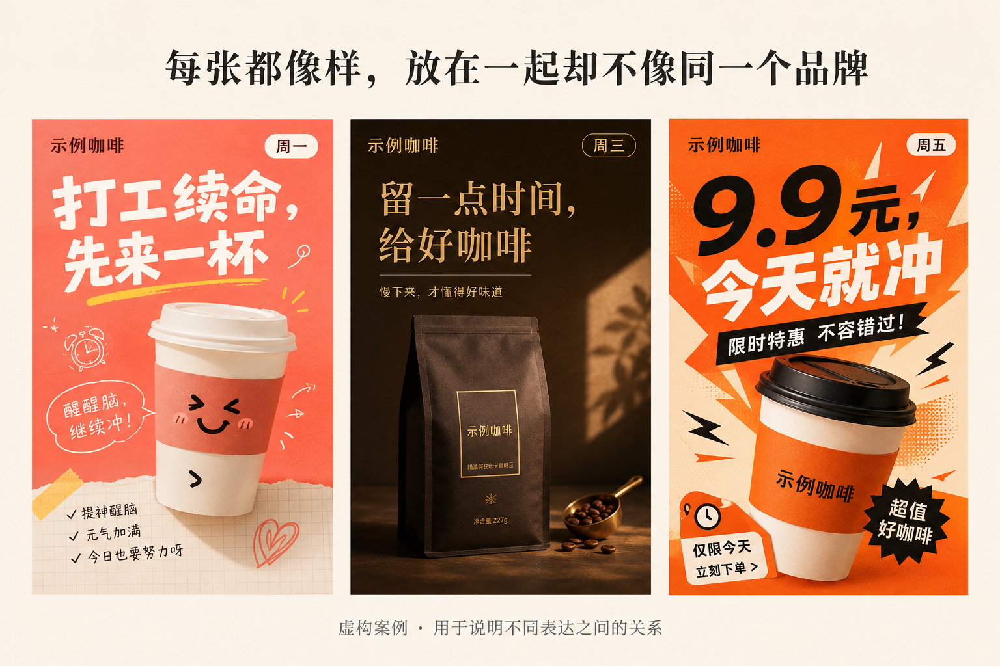
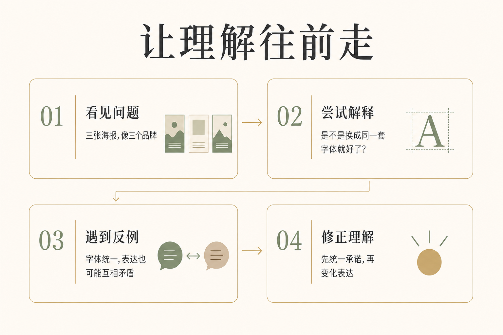

你有没有遇到过这种情况：想写一个选题，搜了一圈，发现别人已经写过几十遍。
换个标题，好像也没新多少。再加几个案例，又像把几篇文章拼在一起。
最后，文档停在第一行。
但想想看，一个故事被讲过，真的意味着它不值得再讲了吗？
《奥德赛》的归乡故事已经流传了两千多年。我们大致知道主人公要经历磨难、设法回家，可面对新的电影改编，还是会好奇：这一次，它会怎么把我带进去？
这也是诺兰拍《奥德赛》这件事给我的一个写作启发。
题材决定我们要谈什么，节奏决定读者怎样经历它。
同一个结论，可以被当成一句常识划过去，也可以让人读到最后，停一下，想想自己的工作。
区别往往藏在中间那些安排里。
很多人一说节奏，首先想到的就是快。
开头要抓人，句子要短，段落要碎，最好每隔几行就来一句金句。
可你试着听一个人说话：每句话都提高音量，每句话都强调“接下来特别重要”。听上两分钟，累不累？
文章也一样。一直快，没有快的感觉；一直强调，读者反而不知道该记住哪里。
节奏需要变化。更具体一点，是在合适的时候，让读者看见一个问题、形成一个判断，然后有机会把这个判断往前推一步。
我们拿一个选题试试。
假设你准备写：“为什么品牌表达需要保持一致？”
很容易写成这样：
品牌一致性有助于提升辨识度、建立信任，并降低消费者的认知成本。因此，我们需要统一视觉、语言与价值主张。
这段话没什么错。
但读完，你大概只会点点头：“嗯，有道理。”
然后呢？没有然后了。结论太完整，读者还没来得及产生疑问，文章就已经替他结束了思考。
换个开头。
假设有一家咖啡店，正在给自己的账号做内容。
周一，发了一张粉橙色海报。杯子上画着笑脸，文案是：“打工续命，先来一杯。”
周三，换成深棕色背景。咖啡豆、金色光线，配一句：“留一点时间，给好咖啡。”
周五，橙色大字铺满屏幕：“9.9元，今天就冲。”
你把三张图并排打开，遮住店名。
它们像同一家店吗？

这时候，读者开始有自己的判断了。
“是不是风格太乱？换成同一套字体、同一组颜色就好了。”
很好。文章可以顺着这个想法走一步。
把三张海报都改成米白底，店名放在左上角，标题统一用黑体。现在看上去整齐多了。
问题解决了吗？
先别急。再看文案。
假设周三写的是：“贵一点，因为好咖啡值得。”
到了周五，却变成：“喝咖啡还花二十多？别当冤大头。”
字体完全统一，两句话却在互相拆台。前天刚被说服买单的人，今天突然成了被嘲讽的对象。
到这里再谈“价值主张一致”，读者就不太需要背概念了。他已经看见：视觉可以把几张图排整齐，却未必能让几句话讲到一起。
你看，我们没有增加一个特别新奇的观点，只是调整了它出现的顺序。
先给场景，让人发现问题；再接住一个合理的解释；随后放进一个这个解释解决不了的细节。结论因此有了落脚点。

不过，写到这里还不能收尾。
因为读者很可能会问：“照这么说，品牌就不能促销，也不能换语气了？天天说一样的话，谁愿意看？”
这个追问值得认真回答。
当然可以变化。咖啡店可以周一谈上班，周三谈风味，周五做优惠。不同场景，本来就需要不同表达。
假设它一直想传达的是“认真做一杯日常喝得起的咖啡”，那周三可以介绍豆子的烘焙方式，周五可以解释优惠来自新客体验。两条内容各有重点，却不用否定彼此。
此时，读者的理解又向前走了一步：一致性不等于每次都说同一句话，而是换了场景，承诺仍然站得住。
文章的推进，就发生在这些具体的追问和回答之间。
所谓对话感，也正在这里。
多写几个“你知道吗”“对吧”，未必就像聊天。真正让人感觉你在和他说话的，是你知道他读到这里可能不服，可能误解，也可能正在想：“那我遇到的另一种情况呢？”
你愿意接着谈，而不是把准备好的观点念完。
那节奏里的“快慢”又怎么安排？
回到刚才的咖啡店。
“周一发了什么，周三发了什么”，几句话就能带过。没必要补上老板叫什么、店开在哪条街，除非这些信息会影响后面的判断。
但到了两句文案互相矛盾的地方，可以慢下来。
把两句话单独摆出来，让读者比较。再补上那个具体处境：一个前天刚买了二十多元咖啡的人，今天看到了这张促销海报。
这一下，比继续解释三百字“信任的重要性”更容易理解。
电影可以用镜头决定你看见什么、看多久。文章也有类似的选择：哪段背景一笔带过，哪句原话完整保留，哪个细节值得停下来。
配图同样参与节奏。
在这篇文章里，三张海报并排，是让你先观察；后面的流程图，是把刚才经历的推理收拢一下。它们各自承担一个任务。
如果每隔两段都放一张漂亮却无关的图，阅读反而会被不断打断。图很多，未必更好读。
还有一个容易走偏的地方：为了“讲故事”，故意拖着不说答案。
明明一句话能讲清，偏要绕过三次悬念，最后来一句“看到这里，你终于明白了”。
读者很可能早就明白了，只是在等你说完。
好的节奏需要不断给出东西：一个能辨认的场景，一个更准确的解释，一个可以拿去用的判断。下一段之所以值得读，是因为新的问题自然出现了。
所以，下次改稿时，可以先别急着润色句子。
把每段旁边都写上一句话：读到这里，读者的理解发生了什么变化？
如果三段都在重复“这件事很重要”，可以合并。如果突然跳出一个术语，想想前面缺了哪个问题。如果结论人人都会说，就找一个细节，让人看见它究竟在哪里起作用。
当然，操作步骤、通知、答案查询，有时直接说清楚就够了。需要展开讨论的文章，才更值得花心思安排理解的过程。
选题熟悉，并不意味着阅读体验只能熟悉。
一个归乡故事，我们早就知道他想回家。但他眼前这片海怎么过，刚刚燃起的希望为什么又落空，下一次选择要付出什么，仍然能让人看下去。
写文章也是这样。
读者可能早就听过你的结论。
你能不能带他走到一个具体的地方，让他忽然发现：“原来这句话，说的是我上周遇到的那件事。”